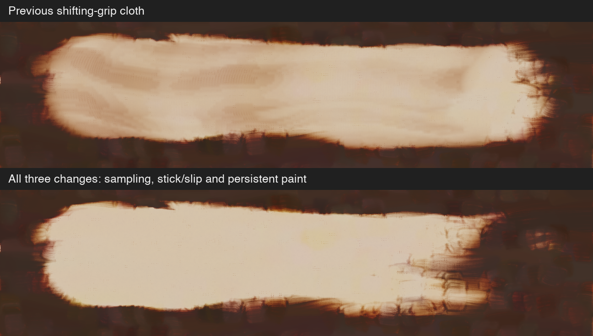
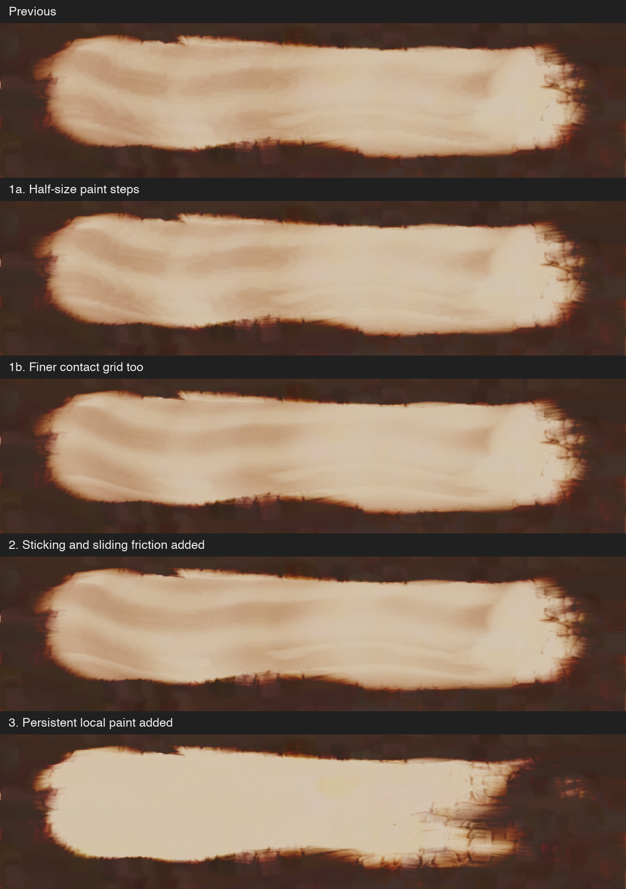
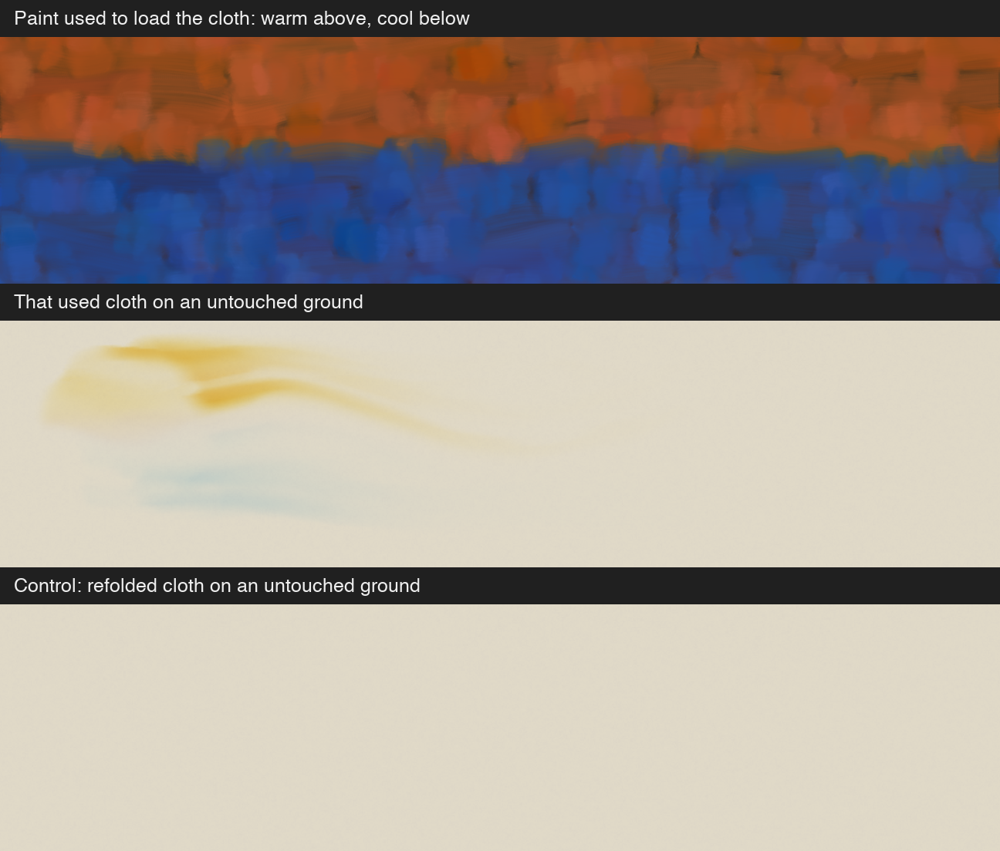

Same dark paint, path, seeds, pressure 0.8 and dip 0.5. Comparisons use native-pixel crops without color adjustment.


A separate demonstration loads the upper and lower cloth with warm and cool paint, then wipes an untouched ground with that same face. A refolded copy is the control.

Original files: color source · source after pickup · used face on ground · refolded control.
12 focused paint and Lua/session rag tests passed; 1 diagnostic test remained ignored. This includes conservation across different pixel resolutions, spatial warm/cool carryover, refolding, drying, repeated wipes and failed-chunk rollback. Test log.
The new carryover test also ran against the previous grip prototype and failed at its first assertion: no paint survived into a separate contact. That is an expected negative control. Previous-version test log.
Still an experimental, uncalibrated coarse cloth model with flat support and no self-collision. Full release validation and visual acceptance are not complete.
Saved locally as an unapplied patch; shipping source restored. Cloth solver · Persistent paint map · Render source.